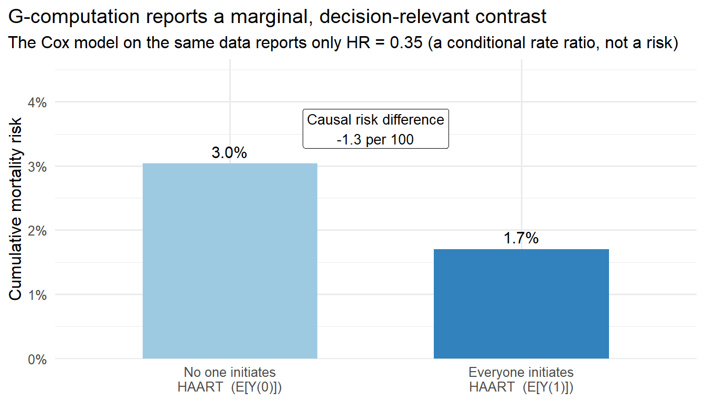

Most observational studies start with a causal question: does treatment A reduce the risk of outcome Y compared to treatment B? Researchers typically reach for a familiar tool: fit a Cox proportional hazards model, adjust for available confounders, and interpret the hazard ratio as the answer. This workflow is so common that it can feel like the only workflow.
But there are two distinct problems with this approach. First, the regression model may be misspecified (the wrong functional form, missing interactions, or omitted confounders can bias the coefficient). Second, and more fundamentally, even a perfectly specified model may answer the wrong question. A conditional hazard ratio from a Cox model is not the same quantity as “the causal effect of treatment on 3-year risk.” The hazard ratio is a conditional, instantaneous rate measure that does not directly translate to a population-level risk difference or survival probability contrast. The causal question you want to answer may simply not correspond to any single regression coefficient.
Recognizing this gap is not a criticism of regression itself; regression remains a useful building block. The gap is a reason to adopt a more deliberate analytic workflow, a Causal Roadmap(Petersen and Laan 2014; Dang, Tager, and Petersen 2023), that starts with a clearly defined causal question, specifies a target estimand on a meaningful scale (such as the risk difference or restricted mean survival time difference), and chooses an estimation strategy that targets it directly. Later chapters introduce longitudinal TMLE (L-TMLE)(Laan and Rubin 2006), which can estimate causal survival curve contrasts without relying on the proportional hazards assumption.
This chapter uses a concrete clinical example to illustrate where the standard regression-only approach falls short, introduces the counterfactual framework that makes causal questions precise, and demonstrates g-computation as a first step toward targeted estimation. Later chapters build on these ideas with inverse probability weighting (IPTW), targeted minimum loss-based estimation (TMLE) (Laan and Rubin 2006), and the full Causal Roadmap. The chapter proceeds as follows:
A motivating example: HAART and HIV mortality
What adjusted regression does and does not give you
The counterfactual (potential outcomes) framework
G-computation as a bridge from association to causation
Summary and practice questions
Learning objectives
Understand why regression coefficients do not, in general, equal causal effects
Recognize confounding, collider bias, and table-2 fallacy in routine analyses
Articulate the counterfactual (potential outcomes) framework for defining causal contrasts
Distinguish conditional associations from marginal causal effects
Motivate the need for the Causal Roadmap and modern estimation methods (g-computation, IPTW, TMLE)
Causal conclusions require identification assumptions (consistency, exchangeability, positivity) that no statistical method can verify from data alone.
4.1 Why Not Just Use Regression?
Multivariable regression has long been the standard tool in observational research for “adjusting” for confounders. But regression coefficients don’t always represent causal effects. In fact, they almost never do without additional assumptions and deliberate analytic choices that go beyond what standard regression provides.
Key point. If you’ve been trained to interpret an adjusted regression coefficient as “the effect of X on Y, holding all else equal,” you’re in good company, but that interpretation quietly smuggles in causal language that the model itself cannot justify. The coefficient tells you about the conditional association within strata defined by the other variables in the model. Whether that association equals a causal effect depends on assumptions that regression alone cannot verify.
The table-2 fallacy(Westreich and Greenland 2013) occurs when analysts interpret multiple coefficients from a single regression as if each one estimates a separate causal effect. Each coefficient in a multivariable regression has a different set of confounders, mediators, and colliders. A model that is correctly specified for the causal effect of treatment on the outcome may simultaneously produce a biased coefficient for a covariate in the same model. Treating all coefficients as causal is a common and consequential error in applied work.
4.1.1 Motivating Example: HAART and HIV Mortality
Suppose we have an observational HIV cohort and want to know whether patients who ever initiated highly active antiretroviral therapy (HAART) had a different risk of death than patients who never initiated it. The causal question is straightforward: if we could assign everyone in this population to HAART versus to no HAART, would the mortality risk differ, and by how much?
The standard approach is to fit a Cox proportional hazards model, adjust for confounders like age, sex, and baseline CD4 count, and report the adjusted hazard ratio. Let’s see what that looks like on the running HAART cohort (Wal and Geskus 2011) (introduced in the Running Case Study and used as a point-treatment baseline snapshot here).
We adjust for age, sex, and baseline (square-root) CD4 count using a Cox model:
A simplification with a known cost: immortal time
This point-treatment analysis defines treatment as “ever initiated HAART during follow-up” and then analyzes it as if it were a baseline exposure. Because haartind is an absorbing event collapsed to a single label, patients counted as initiators are guaranteed to have survived until their initiation time, which induces immortal time bias by construction, exactly the error Chapter 5 teaches you to avoid. We accept it here only to demonstrate estimator mechanics on one familiar dataset; the unbiased treatment of this question requires the longitudinal g-methods in Part III. See the case study caveat for the full statement.
Show code
cox_model <-coxph(Surv(total_fup_days, died) ~ ever_haart + age + sex + cd4_sqrt_baseline,data = dat)tidy(cox_model, conf.int =TRUE, exponentiate =TRUE) |>kable(digits =3, caption ="Adjusted Cox proportional hazards model (hazard ratios)")
Adjusted Cox proportional hazards model (hazard ratios)
term
estimate
std.error
statistic
p.value
conf.low
conf.high
ever_haart
0.354
0.436
-2.384
0.017
0.151
0.831
age
1.063
0.015
4.063
0.000
1.032
1.095
sex
1.077
0.468
0.159
0.874
0.430
2.698
cd4_sqrt_baseline
0.962
0.030
-1.275
0.202
0.906
1.021
The Hazard Ratio Is NOT the Causal Effect You Want
The adjusted hazard ratio for ever_haart quantifies an instantaneous rate ratio for death within strata of age, sex, and baseline CD4. But what does a clinician or policymaker actually need to know? They need to know: if we initiated HAART in everyone eligible compared with no one, how would the cumulative mortality risk over follow-up change? That quantity, the marginal risk difference in mortality, is the natural scale for comparing treatments and making decisions.
The Cox hazard ratio does not answer that question. It is a conditional, instantaneous rate ratio that:
Assumes proportional hazards (that the treatment effect is constant over time), which is often violated in practice.
Is non-collapsible: the conditional HR and marginal HR differ even without confounding, so the coefficient does not have a straightforward population-level interpretation.
Does not directly translate to a risk difference or survival probability contrast without additional computation.
Is also confounded by indication in observational HIV data: sicker patients (lower CD4) were more likely to start HAART, so the unadjusted association conflates the drug’s benefit with baseline severity. We will return to this in the longitudinal section below.
In later chapters, we introduce longitudinal TMLE (L-TMLE), which directly estimates causal survival curves and risk differences at specific time points without relying on the proportional hazards assumption.
4.2 Enter the Counterfactual Framework
For each person we imagine two hypothetical worlds: Y(1) (outcome if they had initiated HAART) and Y(0) (outcome if they had not) (Hernán and Robins 2025); these are the potential outcome \(Y(a)\) written out for the two treatment levels \(a = 1\) and \(a = 0\), and later chapters use the general \(Y(a)\) form when treatment takes more than two values or varies over time. The average treatment effect (ATE) is:
\[
ATE = E[Y(1) - Y(0)]
\]
The fundamental problem of causal inference is that each person only receives one treatment. We observe Y(1) or Y(0), never both. Under three key identification assumptions, exchangeability (no unmeasured confounding), consistency (the observed outcome under the treatment actually received equals the potential outcome), and positivity (every individual has a nonzero probability of receiving either treatment given their covariates), we can identify the causal ATE from observed data using the g-computation formula:
\[
ATE = E_W\big[ E[Y \mid A = 1, W] - E[Y \mid A = 0, W] \big]
\]
where W represents the measured confounders and A is the treatment. This expression says: within each confounder stratum, compute the difference in expected outcomes between treated and untreated, then average over the distribution of confounders in the population.
4.3 When Regression Fails
Model Misspecification Can Silently Bias Your Results
Misspecification bias is silent. A regression with the wrong functional form still produces coefficients and p-values with no warning. This motivates semiparametric estimators (like TMLE with machine learning (Laan and Rubin 2006; Bang and Robins 2005)) that relax parametric assumptions.
Let’s compare the Cox approach to g-computation, which directly targets the marginal risk difference for mortality over follow-up. Both models are fit on the same data and adjust for the same confounders; the only thing that changes is what we ask the fitted model to report.
# G-computation: fit a logistic outcome model, then standardizegcomp_model <-glm( died ~ ever_haart + age + sex + cd4_sqrt_baseline,family = binomial, data = dat)# Predict each person's counterfactual mortality risk under both strategies,# then average to get the marginal (population-level) risksrisk1 <-mean(predict(gcomp_model, mutate(dat, ever_haart =1), type ="response"))risk0 <-mean(predict(gcomp_model, mutate(dat, ever_haart =0), type ="response"))risk_diff <- risk1 - risk0risk_ratio <- risk1 / risk0# Cox model on the same data: the conditional hazard ratiocox_hr <-exp(coef(cox_model)["ever_haart"])
G-computation predicts counterfactual outcomes for every person under treatment and under control, then averages the difference. The result is a marginal risk difference, a population-level quantity directly relevant to decision-making, unlike the conditional hazard ratio from the Cox model. Placing the two side by side makes the gap concrete:
Show code
data.frame(Quantity =c("Cox hazard ratio (ever vs never HAART)","Risk if everyone initiated HAART, E[Y(1)]","Risk if no one initiated HAART, E[Y(0)]","Marginal risk difference, E[Y(1)] - E[Y(0)]","Marginal risk ratio, E[Y(1)] / E[Y(0)]" ),Value =c(sprintf("%.2f", cox_hr),sprintf("%.1f%%", 100* risk1),sprintf("%.1f%%", 100* risk0),sprintf("%+.1f per 100", 100* risk_diff),sprintf("%.2f", risk_ratio) ),Scale =c("Conditional, instantaneous rate ratio","Probability", "Probability","Probability difference", "Probability ratio" )) |>kable(caption =NULL, align =c("l", "r", "l"))
Table 4.1: The same data and the same confounders, two different estimands. The Cox hazard ratio lives on an instantaneous rate scale and does not translate into how many deaths a treatment policy would avert; the g-computation contrasts live on the risk scale and do.
Quantity
Value
Scale
Cox hazard ratio (ever vs never HAART)
0.35
Conditional, instantaneous rate ratio
Risk if everyone initiated HAART, E[Y(1)]
1.7%
Probability
Risk if no one initiated HAART, E[Y(0)]
3.0%
Probability
Marginal risk difference, E[Y(1)] - E[Y(0)]
-1.3 per 100
Probability difference
Marginal risk ratio, E[Y(1)] / E[Y(0)]
0.56
Probability ratio
Show code
library(ggplot2)gcomp_df <-data.frame(strategy =factor(c("Everyone initiates\nHAART (E[Y(1)])", "No one initiates\nHAART (E[Y(0)])"),levels =c("No one initiates\nHAART (E[Y(0)])", "Everyone initiates\nHAART (E[Y(1)])") ),risk =c(risk1, risk0))ggplot(gcomp_df, aes(strategy, risk, fill = strategy)) +geom_col(width =0.6, show.legend =FALSE) +geom_text(aes(label =sprintf("%.1f%%", 100* risk)), vjust =-0.5, size =4) +annotate("label", x =1.5, y =max(gcomp_df$risk) *1.18,label =sprintf("Causal risk difference\n%+.1f per 100", 100* risk_diff),size =3.5, label.size =0 ) +scale_y_continuous(labels =function(x) paste0(100* x, "%"),expand =expansion(mult =c(0, 0.30)) ) +scale_fill_manual(values =c("#9ecae1", "#3182bd")) +labs(x =NULL, y ="Cumulative mortality risk",title ="G-computation reports a marginal, decision-relevant contrast",subtitle =sprintf("The Cox model on the same data reports only HR = %.2f (a conditional rate ratio, not a risk)", cox_hr ) ) +theme_minimal(base_size =12) +theme(plot.title.position ="plot")

Figure 4.1: Two answers to one question, from one dataset. The g-computation bars show the marginal cumulative-mortality risk the population would experience if everyone versus no one initiated HAART; the gap between them is the causal risk difference a clinician can act on. The Cox model fit to the very same data returns only the single hazard ratio in the subtitle, a conditional rate ratio that cannot be read off the risk axis at all.
The Cox model and the logistic g-computation are fitted on the same data, but they answer different questions. The hazard ratio is a conditional, instantaneous rate ratio that does not directly tell us how many deaths would be averted by HAART, and it is non-collapsible: the conditional HR differs from the marginal HR even without confounding. The g-computation risk difference \(E[Y(1)] - E[Y(0)]\) is negative here, because HAART is protective: the figure and table print a number like \(-X\) per 100, meaning that initiating HAART in everyone rather than no one lowers cumulative mortality by about \(X\) per 100. Read the other way round, about \(X\) more people per 100 would have died if no one had been initiated on HAART compared to if everyone had been. That is the kind of number patients and clinicians need to make decisions.
The point-treatment analysis above already shows that the estimand matters. The HAART setting also illustrates a deeper, structural problem that no choice of point-treatment estimator can fix. In the longitudinal HAART data, CD4 count is measured at each visit and used to guide treatment decisions. But CD4 is also affected by prior treatment: HAART improves CD4 counts. This creates treatment–confounder feedback, a structure where the same variable (CD4) is simultaneously a confounder of future treatment and a consequence of past treatment.
Standard regression faces an impossible choice in this setting. If you do not adjust for time-varying CD4, you leave confounding of future treatment decisions unaddressed. If you do adjust for it, you block part of the causal pathway from HAART through improved CD4 to reduced mortality. Neither approach produces a consistent estimate of the total treatment effect. This is not a matter of choosing the right covariates or the right functional form. It is a structural limitation of the regression framework when applied to longitudinal data with feedback.
The g-methods developed in this handbook (g-computation, IPTW with marginal structural models, and longitudinal TMLE) were designed for exactly this structure. We return to the longitudinal HAART data in the Running Case Study and develop the necessary methods in Part III.
4.4 Summary
Key Takeaways
Regression is not inherently causal. It estimates conditional associations under strong model assumptions. An adjusted coefficient is not the same as a causal effect.
Causal inference starts with a question, not a model. Define your causal question and target estimand (e.g., the ATE on the risk difference scale) before choosing an analytic method.
The counterfactual framework clarifies what we want to estimate. Y(1), Y(0), and the ATE give us precise, model-free definitions of causal effects.
G-computation, IPTW, and TMLE estimate marginal causal effects. These methods target the population-level quantity defined by the g-computation formula, rather than relying on regression coefficients that conflate the estimand with the model (Smith et al. 2023).
The hazard ratio from Cox regression is not the ATE. Hazard ratios are conditional, instantaneous rate measures that do not directly translate to risk differences. This is perhaps the single most important distinction for epidemiologists moving from traditional regression to causal inference methods.
4.5 What comes next
Now that you understand why regression coefficients are not causal effects, the next chapter introduces the Causal Roadmap: a structured workflow that turns a scientific question into a defensible analysis plan, from question definition through estimation and interpretation.
4.6 Check your understanding
Q1. Why can’t you interpret an adjusted logistic regression coefficient as the ATE?
The adjusted coefficient from logistic regression is a conditional log-odds ratio. It describes the association between treatment and outcome within strata defined by the covariates in the model. This differs from the ATE (a marginal risk difference) in at least two ways. First, the odds ratio is non-collapsible: even without confounding, a conditional odds ratio and a marginal odds ratio will differ, so you cannot read the coefficient as a population-level summary. Second, the coefficient li
Bang, Heejung, and James M Robins. 2005. “Doubly Robust Estimation in Missing Data and Causal Inference Models.”Biometrics 61 (4): 962–73.
Dang, Lauren E, Issa Tager, and Maya L Petersen. 2023. “A Causal Roadmap for Generating High-Quality Real-World Evidence.”Journal of Clinical and Translational Science 7 (1): e127.
Laan, Mark J van der, and Daniel Rubin. 2006. “Targeted Maximum Likelihood Learning.”The International Journal of Biostatistics 2 (1).
Petersen, Maya L, and Mark J van der Laan. 2014. “Causal Models and Learning from Data: Integrating Causal Modeling and Statistical Estimation.”Epidemiology 25 (3): 418–26.
Smith, Matthew J, Mohammad Ali Mansournia, Camille Maringe, Paul N Zivich, Stephen R Cole, Clemence Leyrat, Aurelien Belot, Bernard Rachet, and Miguel Angel Luque-Fernandez. 2023. “Application of Targeted Maximum Likelihood Estimation in Observational Epidemiology: A Systematic Review.”American Journal of Epidemiology 192 (9): 1565–82.
Wal, Willem M. van der, and Ronald B. Geskus. 2011. “ipw: An R Package for Inverse Probability Weighting.”Journal of Statistical Software 43 (13): 1–23. https://doi.org/10.18637/jss.v043.i13.
Westreich, Daniel, and Sander Greenland. 2013. “The Table 2 Fallacy: Presenting and Interpreting Confounder and Modifier Coefficients.”American Journal of Epidemiology 177 (4): 292–98.
Source Code
---format: html---# Why We Need a Causal Roadmap {#sec-regression-vs-causal}*Estimated reading time: 25 minutes*Most observational studies start with a causal question: does treatment A reduce the risk of outcome Y compared to treatment B? Researchers typically reach for a familiar tool: fit a Cox proportional hazards model, adjust for available confounders, and interpret the hazard ratio as the answer. This workflow is so common that it can feel like the *only* workflow.But there are two distinct problems with this approach. First, the regression model may be **misspecified** (the wrong functional form, missing interactions, or omitted confounders can bias the coefficient). Second, and more fundamentally, even a perfectly specified model may answer the **wrong question**. A conditional hazard ratio from a Cox model is not the same quantity as "the causal effect of treatment on 3-year risk." The hazard ratio is a conditional, instantaneous rate measure that does not directly translate to a population-level risk difference or survival probability contrast. The causal question you want to answer may simply not correspond to any single regression coefficient.Recognizing this gap is not a criticism of regression itself; regression remains a useful building block. The gap is a reason to adopt a more deliberate analytic workflow, a **Causal Roadmap** [@petersen2014causal; @dang2023causal], that starts with a clearly defined causal question, specifies a target estimand on a meaningful scale (such as the risk difference or restricted mean survival time difference), and chooses an estimation strategy that targets it directly. Later chapters introduce **longitudinal TMLE (L-TMLE)** [@vanderLaan2006tmle], which can estimate causal survival curve contrasts without relying on the proportional hazards assumption.This chapter uses a concrete clinical example to illustrate where the standard regression-only approach falls short, introduces the counterfactual framework that makes causal questions precise, and demonstrates g-computation as a first step toward targeted estimation. Later chapters build on these ideas with inverse probability weighting (IPTW), targeted minimum loss-based estimation (TMLE) [@vanderLaan2006tmle], and the full Causal Roadmap. The chapter proceeds as follows:1. A motivating example: HAART and HIV mortality2. What adjusted regression does and does not give you3. The counterfactual (potential outcomes) framework4. G-computation as a bridge from association to causation5. Summary and practice questions::: {.callout-note}## Learning objectives- Understand why regression coefficients do not, in general, equal causal effects- Recognize confounding, collider bias, and table-2 fallacy in routine analyses- Articulate the counterfactual (potential outcomes) framework for defining causal contrasts- Distinguish conditional associations from marginal causal effects- Motivate the need for the Causal Roadmap and modern estimation methods (g-computation, IPTW, TMLE):::*Causal conclusions require identification assumptions (consistency, exchangeability, positivity) that no statistical method can verify from data alone.*```{r}#| include: falseknitr::opts_chunk$set(collapse =TRUE,comment ="#>",fig.width =7,fig.height =4,fig.align ="center")```## Why Not Just Use Regression?Multivariable regression has long been the standard tool in observational research for "adjusting" for confounders. But regression coefficients don't always represent causal effects. In fact, they almost never do without additional assumptions and deliberate analytic choices that go beyond what standard regression provides.**Key point.** If you've been trained to interpret an adjusted regression coefficient as "the effect of X on Y, holding all else equal," you're in good company, but that interpretation quietly smuggles in causal language that the model itself cannot justify. The coefficient tells you about the **conditional association** within strata defined by the other variables in the model. Whether that association equals a causal effect depends on assumptions that regression alone cannot verify.The **table-2 fallacy** [@westreich2013table2] occurs when analysts interpret multiple coefficients from a single regression as if each one estimates a separate causal effect. Each coefficient in a multivariable regression has a different set of confounders, mediators, and colliders. A model that is correctly specified for the causal effect of treatment on the outcome may simultaneously produce a biased coefficient for a covariate in the same model. Treating all coefficients as causal is a common and consequential error in applied work.### Motivating Example: HAART and HIV MortalitySuppose we have an observational HIV cohort and want to know whether patients who ever initiated **highly active antiretroviral therapy (HAART)** had a different risk of death than patients who never initiated it. The causal question is straightforward: if we could assign everyone in this population to HAART versus to no HAART, would the mortality risk differ, and by how much?The standard approach is to fit a **Cox proportional hazards model**, adjust for confounders like age, sex, and baseline CD4 count, and report the adjusted hazard ratio. Let's see what that looks like on the running HAART cohort [@vanderwal2011ipw] (introduced in the [Running Case Study](00-case-study.qmd) and used as a point-treatment baseline snapshot here).```{r, include=FALSE}#| code-fold: truelibrary(broom)library(knitr)library(survival)library(dplyr)source("_data/load-haart-cohort.R")dat <- haart_baseline```We adjust for age, sex, and baseline (square-root) CD4 count using a Cox model::::{.callout-warning}## A simplification with a known cost: immortal timeThis point-treatment analysis defines treatment as "ever initiated HAART during follow-up" and then analyzes it as if it were a baseline exposure. Because `haartind` is an absorbing event collapsed to a single label, patients counted as initiators are guaranteed to have survived until their initiation time, which induces **immortal time bias** by construction, exactly the error @sec-roadmap teaches you to avoid. We accept it here only to demonstrate estimator mechanics on one familiar dataset; the unbiased treatment of this question requires the longitudinal g-methods in Part III. See the [case study caveat](00-case-study.qmd#cohort-summary-of-baseline-characteristics) for the full statement.:::```{r}#| code-fold: truecox_model <-coxph(Surv(total_fup_days, died) ~ ever_haart + age + sex + cd4_sqrt_baseline,data = dat)tidy(cox_model, conf.int =TRUE, exponentiate =TRUE) |>kable(digits =3, caption ="Adjusted Cox proportional hazards model (hazard ratios)")```:::{.callout-warning}## The Hazard Ratio Is NOT the Causal Effect You WantThe adjusted hazard ratio for `ever_haart` quantifies an instantaneous rate ratio for death within strata of age, sex, and baseline CD4. But what does a clinician or policymaker actually need to know? They need to know: **if we initiated HAART in everyone eligible compared with no one, how would the cumulative mortality risk over follow-up change?** That quantity, the **marginal risk difference** in mortality, is the natural scale for comparing treatments and making decisions.The Cox hazard ratio does not answer that question. It is a **conditional, instantaneous rate ratio** that:- Assumes **proportional hazards** (that the treatment effect is constant over time), which is often violated in practice.- Is **non-collapsible**: the conditional HR and marginal HR differ even without confounding, so the coefficient does not have a straightforward population-level interpretation.- Does not directly translate to a risk difference or survival probability contrast without additional computation.- Is also confounded by indication in observational HIV data: sicker patients (lower CD4) were more likely to start HAART, so the unadjusted association conflates the drug's benefit with baseline severity. We will return to this in the longitudinal section below.In later chapters, we introduce **longitudinal TMLE (L-TMLE)**, which directly estimates causal survival curves and risk differences at specific time points without relying on the proportional hazards assumption.:::## Enter the Counterfactual FrameworkFor each person we imagine two hypothetical worlds: **Y(1)** (outcome if they had initiated HAART) and **Y(0)** (outcome if they had not) [@hernan2025whatif]; these are the potential outcome $Y(a)$ written out for the two treatment levels $a = 1$ and $a = 0$, and later chapters use the general $Y(a)$ form when treatment takes more than two values or varies over time. The **average treatment effect (ATE)** is:$$ATE = E[Y(1) - Y(0)]$$The fundamental problem of causal inference is that each person only receives one treatment. We observe Y(1) or Y(0), never both. Under three key identification assumptions, **exchangeability** (no unmeasured confounding), **consistency** (the observed outcome under the treatment actually received equals the potential outcome), and **positivity** (every individual has a nonzero probability of receiving either treatment given their covariates), we can identify the causal ATE from observed data using the **g-computation formula**:$$ATE = E_W\big[ E[Y \mid A = 1, W] - E[Y \mid A = 0, W] \big]$$where W represents the measured confounders and A is the treatment. This expression says: within each confounder stratum, compute the difference in expected outcomes between treated and untreated, then average over the distribution of confounders in the population.## When Regression Fails:::{.callout-warning}## Model Misspecification Can Silently Bias Your ResultsMisspecification bias is **silent**. A regression with the wrong functional form still produces coefficients and p-values with no warning. This motivates semiparametric estimators (like TMLE with machine learning [@vanderLaan2006tmle; @bang2005doubly]) that relax parametric assumptions.:::Let's compare the Cox approach to g-computation, which directly targets the marginal risk difference for mortality over follow-up. Both models are fit on the *same* data and adjust for the *same* confounders; the only thing that changes is what we ask the fitted model to report.```{r}# G-computation: fit a logistic outcome model, then standardizegcomp_model <-glm( died ~ ever_haart + age + sex + cd4_sqrt_baseline,family = binomial, data = dat)# Predict each person's counterfactual mortality risk under both strategies,# then average to get the marginal (population-level) risksrisk1 <-mean(predict(gcomp_model, mutate(dat, ever_haart =1), type ="response"))risk0 <-mean(predict(gcomp_model, mutate(dat, ever_haart =0), type ="response"))risk_diff <- risk1 - risk0risk_ratio <- risk1 / risk0# Cox model on the same data: the conditional hazard ratiocox_hr <-exp(coef(cox_model)["ever_haart"])```G-computation **predicts** counterfactual outcomes for every person under treatment and under control, then **averages** the difference. The result is a **marginal risk difference**, a population-level quantity directly relevant to decision-making, unlike the conditional hazard ratio from the Cox model. Placing the two side by side makes the gap concrete:```{r}#| label: tbl-cox-vs-gcomp#| tbl-cap: "The same data and the same confounders, two different estimands. The Cox hazard ratio lives on an instantaneous rate scale and does not translate into how many deaths a treatment policy would avert; the g-computation contrasts live on the risk scale and do."#| code-fold: truedata.frame(Quantity =c("Cox hazard ratio (ever vs never HAART)","Risk if everyone initiated HAART, E[Y(1)]","Risk if no one initiated HAART, E[Y(0)]","Marginal risk difference, E[Y(1)] - E[Y(0)]","Marginal risk ratio, E[Y(1)] / E[Y(0)]" ),Value =c(sprintf("%.2f", cox_hr),sprintf("%.1f%%", 100* risk1),sprintf("%.1f%%", 100* risk0),sprintf("%+.1f per 100", 100* risk_diff),sprintf("%.2f", risk_ratio) ),Scale =c("Conditional, instantaneous rate ratio","Probability", "Probability","Probability difference", "Probability ratio" )) |>kable(caption =NULL, align =c("l", "r", "l"))``````{r}#| label: fig-cox-vs-gcomp#| fig-cap: "Two answers to one question, from one dataset. The g-computation bars show the marginal cumulative-mortality risk the population would experience if *everyone* versus *no one* initiated HAART; the gap between them is the causal risk difference a clinician can act on. The Cox model fit to the very same data returns only the single hazard ratio in the subtitle, a conditional rate ratio that cannot be read off the risk axis at all."#| code-fold: true#| fig-width: 7#| fig-height: 4library(ggplot2)gcomp_df <-data.frame(strategy =factor(c("Everyone initiates\nHAART (E[Y(1)])", "No one initiates\nHAART (E[Y(0)])"),levels =c("No one initiates\nHAART (E[Y(0)])", "Everyone initiates\nHAART (E[Y(1)])") ),risk =c(risk1, risk0))ggplot(gcomp_df, aes(strategy, risk, fill = strategy)) +geom_col(width =0.6, show.legend =FALSE) +geom_text(aes(label =sprintf("%.1f%%", 100* risk)), vjust =-0.5, size =4) +annotate("label", x =1.5, y =max(gcomp_df$risk) *1.18,label =sprintf("Causal risk difference\n%+.1f per 100", 100* risk_diff),size =3.5, label.size =0 ) +scale_y_continuous(labels =function(x) paste0(100* x, "%"),expand =expansion(mult =c(0, 0.30)) ) +scale_fill_manual(values =c("#9ecae1", "#3182bd")) +labs(x =NULL, y ="Cumulative mortality risk",title ="G-computation reports a marginal, decision-relevant contrast",subtitle =sprintf("The Cox model on the same data reports only HR = %.2f (a conditional rate ratio, not a risk)", cox_hr ) ) +theme_minimal(base_size =12) +theme(plot.title.position ="plot")```The Cox model and the logistic g-computation are fitted on the same data, but they answer different questions. The hazard ratio is a conditional, instantaneous rate ratio that does not directly tell us how many deaths would be averted by HAART, and it is non-collapsible: the conditional HR differs from the marginal HR even without confounding. The g-computation risk difference $E[Y(1)] - E[Y(0)]$ is **negative** here, because HAART is protective: the figure and table print a number like $-X$ per 100, meaning that initiating HAART in everyone rather than no one *lowers* cumulative mortality by about $X$ per 100. Read the other way round, about $X$ more people per 100 would have died if no one had been initiated on HAART compared to if everyone had been. That is the kind of number patients and clinicians need to make decisions.<!-- editor note: reconciled the sign per the editorial spec. The figure/table annotate the signed risk difference 100*risk_diff (= risk1 - risk0, negative for a protective treatment); the prose now reads that negative number correctly instead of asserting a positive value next to a negative printed one. -->### Longitudinal failure: treatment-confounder feedbackThe point-treatment analysis above already shows that the *estimand* matters. The HAART setting also illustrates a deeper, structural problem that no choice of point-treatment estimator can fix. In the longitudinal HAART data, CD4 count is measured at each visit and used to guide treatment decisions. But CD4 is also affected by prior treatment: HAART improves CD4 counts. This creates **treatment–confounder feedback**, a structure where the same variable (CD4) is simultaneously a confounder of future treatment and a consequence of past treatment.Standard regression faces an impossible choice in this setting. If you do not adjust for time-varying CD4, you leave confounding of future treatment decisions unaddressed. If you do adjust for it, you block part of the causal pathway from HAART through improved CD4 to reduced mortality. Neither approach produces a consistent estimate of the total treatment effect. This is not a matter of choosing the right covariates or the right functional form. It is a structural limitation of the regression framework when applied to longitudinal data with feedback.The g-methods developed in this handbook (g-computation, IPTW with marginal structural models, and longitudinal TMLE) were designed for exactly this structure. We return to the longitudinal HAART data in the [Running Case Study](00-case-study.qmd) and develop the necessary methods in Part III.## Summary:::{.callout-tip}## Key Takeaways- **Regression is not inherently causal.** It estimates conditional associations under strong model assumptions. An adjusted coefficient is not the same as a causal effect.- **Causal inference starts with a question, not a model.** Define your causal question and target estimand (e.g., the ATE on the risk difference scale) *before* choosing an analytic method.- **The counterfactual framework clarifies what we want to estimate.** Y(1), Y(0), and the ATE give us precise, model-free definitions of causal effects.- **G-computation, IPTW, and TMLE estimate marginal causal effects.** These methods target the population-level quantity defined by the g-computation formula, rather than relying on regression coefficients that conflate the estimand with the model [@smith2023systematic].- **The hazard ratio from Cox regression is not the ATE.** Hazard ratios are conditional, instantaneous rate measures that do not directly translate to risk differences. This is perhaps the single most important distinction for epidemiologists moving from traditional regression to causal inference methods.:::## What comes nextNow that you understand why regression coefficients are not causal effects, the next chapter introduces the **Causal Roadmap**: a structured workflow that turns a scientific question into a defensible analysis plan, from question definition through estimation and interpretation.## Check your understanding<details><summary><strong>Q1. Why can't you interpret an adjusted logistic regression coefficient as the ATE?</strong></summary>The adjusted coefficient from logistic regression is a **conditional log-odds ratio**. It describes the association between treatment and outcome within strata defined by the covariates in the model. This differs from the ATE (a marginal risk difference) in at least two ways. First, the odds ratio is **non-collapsible**: even without confounding, a conditional odds ratio and a marginal odds ratio will differ, so you cannot read the coefficient as a population-level summary. Second, the coefficient li